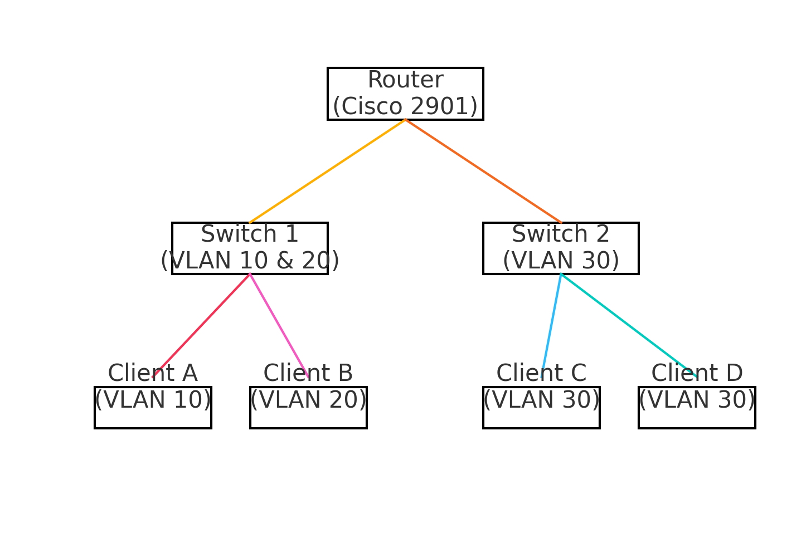

Contexte : Simulation dans Cisco Packet Tracer d’un réseau segmenté pour une PME.
Technos : Routeur Cisco, Switchs 2960, VLANs, DHCP, Routage inter-VLAN
Réalisation : Création de 3 VLANs, configuration des switchs, serveur DHCP, test de routage.
Résultat : Infrastructure simulée, sécurisée et pleinement fonctionnelle.
